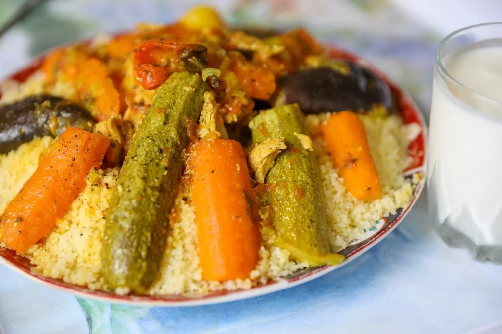

7 Vegetable Moroccan Couscous

Moroccan 7 Vegetable Cousous: The Moroccan King of Culinary
With its classic style. The couscous is a feast for the senses. At its heart is steamed couscous, tender and fluffy, forming a perfect bed for a rich stew of meat and a medley of vegetables. Each ingredient is carefully chosen to bring out a full-bodied, authentic flavor. Whether you're a meat-lover or prefer it vegetarian, this couscous adapts to your taste, always promising a royal treat.
Ingredients
For the Meat:
- 1 kg lamb or beef, preferably large pieces on the bone
- 1 large onion, coarsely chopped
- 4 fresh tomatoes, peeled and coarsely chopped
- 50-60 ml olive oil
- 1.5 teaspoon salt, adjust to taste
- 1 teaspoon ginger powder
- 1 teaspoon pepper
- 1 teaspoon turmeric
- 1 stock cube (beef, lamb, or chicken)
- 1 handful parsley & coriander sprigs, tied together with string
- 100 g chickpeas, soaked overnight (or use precooked tinned chickpeas)
- 2 teaspoon tomato paste mixed in some warm water
- 2 teaspoon Smen (Moroccan preserved butter), optional (to use at the end)
For the Couscous:
- 1 kg couscous (medium.sized, non-instant, for traditional steaming)
- 55 ml olive or vegetable oil
- 1.5 ltr water, divied
- 2-3 teaspoon salt, added after 1st steaming
- 2 teaspoon softened butter, added after final steaming
For the Vegetables:
- 1 small cabbage (or half a large one), cut in half or quartered
- 3 medium turnips, peeled and cut in half
- 8 carrots, peeled and cut in half vertically
- 3 fresh tomatoes, peeled and quartered
- 1 small acorn squash or wedge of pumpkin, quartered vertically
- 4 small courgettes, ends removed and cut in half vertically
- 1 aubergine, ends removed and quartered vertically
- 2 capscicum peepers (seeded and halved), or chili peppers/jalapeños (added to simmer in the broth at the end so they're not too tender)
Steps to Make It
The Meat Broth
- Brown the boned meat chunks with the olive oil, onion, tomatoes and spices in the base of a couscoussier over medium-high heat. Continue cooking, uncovered and stirring frequently, for about 10 to 15 minutes, until a very thick and rich sauce begins to form.
- Add the previously soaked & drained chickpeas along with the parsley/coriander bouquet and about 3 litres of water. Bring to a boil, cover, and cook over medium heat for about 30-40 minutes.
Note:Some people like to cook the meat in a pressure cooker to save time then remove the cooked meat & transfer the gravy stock & chickpeas to the base of the steamer afterwards.
- If using tinned chickpeas, drain, rinse and remove the skin, then don't add to the broth until adding the vegetables.
- Wash and prep your vegetables & set aside for later. You will add them a little at a time usually by the second steaming of the couscous.
- When the meat is soft & succulent you can remove it from the broth and then layer the vegetables in order of cooking time, potatoes & carrots, for example, will be added first as they need more cooking time, then you will follow with parsnips & cabbage etc leaving the most fragile veggies for the top layer at the end.
Steaming The Couscous
- Steaming couscous is the only way couscous is made in Morocco. Be sure the steam doesn't escape between the steamer basket and pot. If it is, loosely wrap a long piece of folded plastic wrap over the rim of the pot and then position the steamer on top; the plastic film should create a snug seal.
- Drizzle 1/4 cup of oil over the couscous. Toss and roll the couscous around between your hands for a minute to distribute the oil evenly and break up any balls or clumps.
- Add 1 cup of water and work it into the couscous in the same way–tossing and rubbing the couscous until all is well blended and there are no clumps.
- Transfer the couscous to a lightly oiled steamer basket, taking care not to compress the grains in the process.
- Place the basket on the couscoussier and steam for 15 to 20 minutes, timing from when the steam first appears over the couscous. This will conclude the first steaming session.
- Then turn the couscous back into your gs3a or large bowl. Allow it to cool briefly, then work in 1 cup of water, using the same tossing and turning as you did before. You may need to use a wooden spoon if the couscous is too hot. If you have heatproof gloves, these will be ideal to use for this process & saves so much time. However if you don't have any and use a spoon, move onto using your hands when the couscous has cooled down enough.
- Add the salt in the same manner, then add in another 1 cup of water. Toss, roll and rub the couscous with your hands for a good few minutes, again making sure there are no ball curdles.
- Transfer the couscous back to the steamer basket, again taking care not to compress or pack the grains.
- At this point, you can add the first layer of vegetables such as the cabbage, tomatoes, pumpkin and carrots, to the couscous pot, before placing the couscous basket on the couscoussier for it's second 15 to 20 mins steaming session. Timing from when you first see steam emerge from the couscous.
- Then turn the steamed couscous out into your bowl and prepare again for the third and final steaming, during this time you can add the turnips, aubergine & courgettes to the pot; cover and allow them to cook for 15 minutes while you work with the couscous.
- Work 2 to 3 cups of water into the couscous a little at a time as before while breaking up and rubbing the grains between your hands, making sure there are no clumps. You don't need to add all the water if it's not needed.
- Taste the couscous for salt and add a little more if desired. Transfer only half of the couscous to the steamer basket this time, again being careful not to pack the grains.
- Add any remaining vegetables to the broth, the peppers if using. Top the sauce up with more water if the level has dropped below the vegetables. Taste and adjust seasoning, it should be well flavoured.
- Then place the couscous basket back on top of the pot and cook until the steam begins to emerge from the couscous. Gently add the remaining couscous to the basket and continue cooking. Once you see steam rise from the couscous, allow it to steam for another 10 to 15 minutes, or until light and fluffy and the latest additions of vegetables have cooked.
- If you would like to try out this couscous recipe but really don't want to mess about with the traditional steaming process, you can opt to use instant couscous, however, be sure to reconstitute it with some broth from this recipe. Avoid making it soggy; it should be as light and fluffy as possible.
Serving The Couscous
- Turn the couscous out into your bowl and work in the butter as you repeat the breaking up process. You can add the smen (if using) to the broth at this point and stir to incorporate.
- Work about 1 cup of broth into the couscous, tossing & rolling as before. Arrange the couscous into a large, shallow plate, in a gs3a or on a round deep serving platter. Then make a large hole/indentation in the middle to hold the meat and veggies.
- Retrieve the meat you took out of the pot earlier and place it in the centre of the couscous. Top it with the cabbage and squash or pumpkin. Retrieve the other vegetables from the broth with a slotted spoon and mount them alternatively around the meat, then garnish with the chickpeas, topping the pyramid of veggies with the peppers. (The bouquet of parsley is usually disregarded).
- Pour several cups of broth carefully over the couscous and offer the remaining broth sauce in gravy boats or bowls on the side.
- Some people love their couscous with lots of gravy and some don't, so if your like my household and love more gravy you can increase the seasoning and water by half to ensure that you have ample broth for serving on the side.
- Couscous in Morocco is enjoyed every Friday lunchtime and is always served and shared from one big plate. It is often accompanied with chilled leban (a yoghurt milk drink)